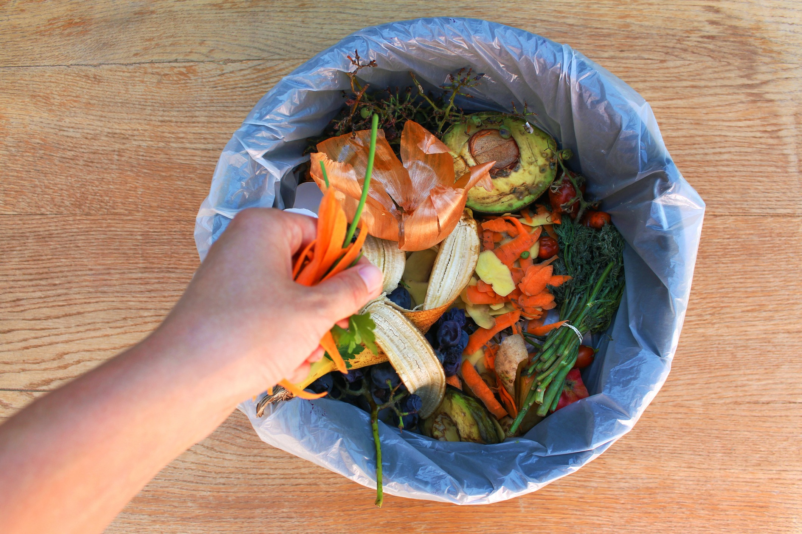

Madspild

- Samlet smider vi i Danmark hvert år over 800.000 ton mad ud
- Husholdningernes madspild udgør 247.000 ton pr. år
- Næsten 1/3 af alle danskere smider fødevarer ud dagligt eller 3-4 gange om ugen
- Omkring 20 % af danskerne smider middagsrester/-tilbehør ud 3-4 gange om ugen
- Det største madspild i servicesektoren stammer fra detailhandelen, der spilder 163.000 tons pr. år.
- Madspild ligger på en tredjeplads over verdens værste klimasyndere.